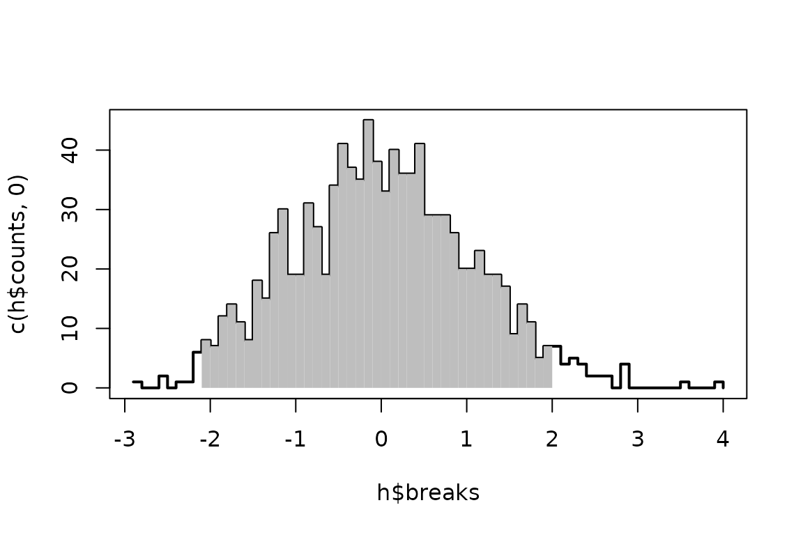
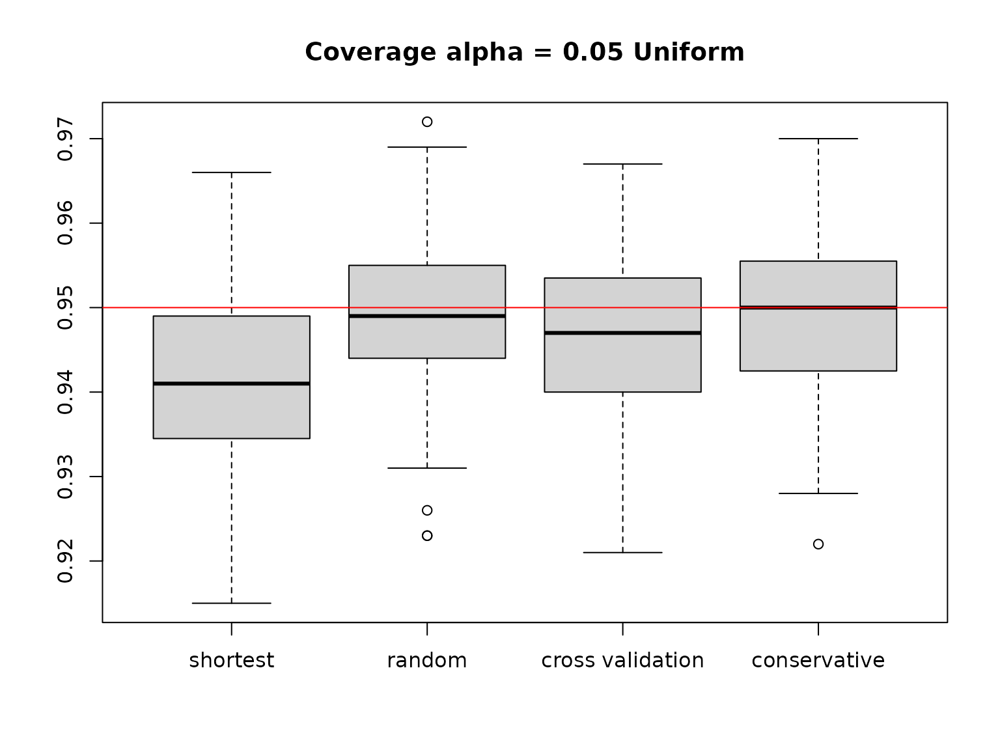
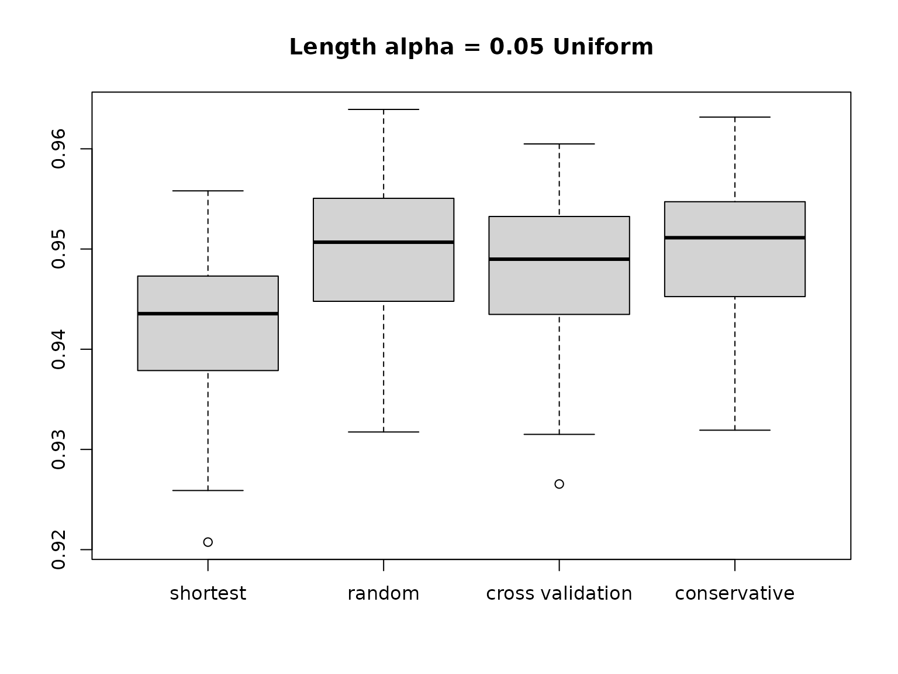
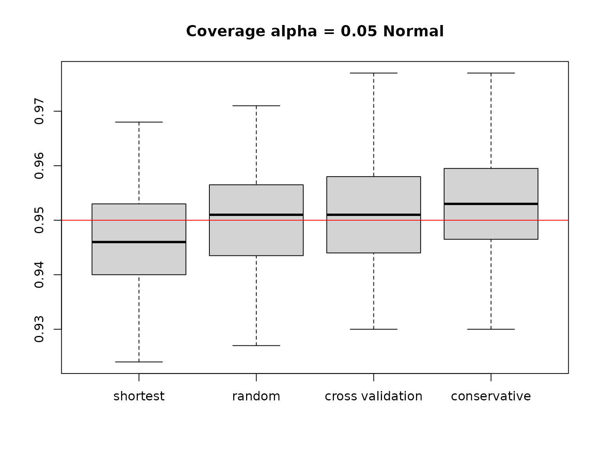
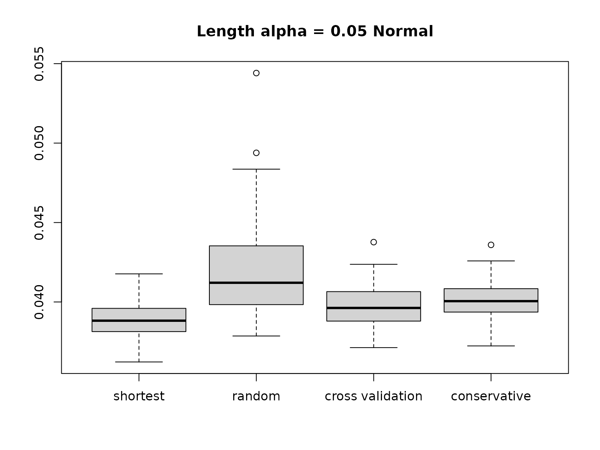
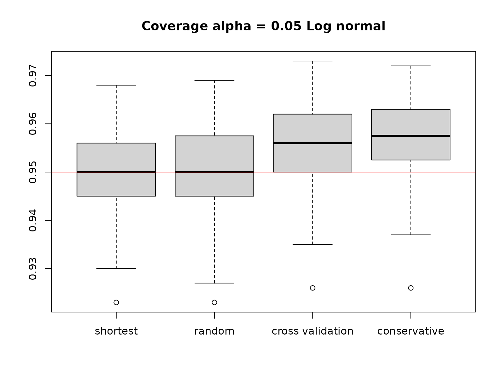

Illustration of methodology and functional of vhdi
vhdi.Rmd
library(vhdi)Methods
We introduce three methods to generate the prediction intervals with robust coverage rate and shortest length.
Let \(\mathbf{X} = (X_1,\cdots,X_n)\) be an i.i.d random sample from a distribution with continuous cumulative distribution function \(F\). For a given nominal error rate \(\alpha\), a \(100((1-\alpha)\%\) prediction interval for an independent future observation \(X_{n+1}\) from the same distribution is a random interval \((L(\mathbf{X}), U(\mathbf{X}))\) such that
\[P(L(\mathbf{X})<X_{n+1}<U(\mathbf{X}))\geq 1-\alpha\]
We would like to use different methods to find \((L(\mathbf{X}), U(\mathbf{X}))\).
Shortest prediction interval (with no correction)
Find the shortest intervals \((X_{(r)}, X_{(r+k)})\) such that \(\frac{k}{n+1} \geq 1-\alpha\). \(X_{(r)}\) is the \(r\)th order statistics of \(X_1, \cdots, X_n\). Formally, \[r = \arg\min_{1\leq r \leq n-k}\{X_{(r+k)} - X_{(r)}\},\] where \(k = \lceil (1-\alpha)(n+1) \rceil\). This is the method implemented in function from package to find the highest density interval.
Or equivalently, we can search for \[\beta = \arg\min_{0\leq \beta\leq \alpha}\{X_{(r+k)} - X_{(r)}\},\] where \(r = \lfloor (n+1)\beta\rfloor\) and \(r+k = \lceil (n+1)(1-\alpha+\beta)\rceil\).
If \(r\)(or \(\beta\)) is pre-specified or chosen at random, the above prediction interval \((X_{(r)}, X_{(r+k)})\) has coverage rate at least \(1-\alpha\). However, the searching process introduces dependence of the positioning on the data, and the selected shortest prediction interval will suffer from under-coverage problem.
The function searching for the shortest interval is
shortest.pi, which takes a data vector x and
nominal error rate alpha as input, searches along a
sequence of \(\beta =
\{k*\alpha/50\}_{k=1}^{50}\), and returns the shortest interval
\((X_{(r)}, X_{(r+k)})\), where \(r = \lfloor (n+1)\beta\rfloor\) and \(r+k = \lceil
(n+1)(1-\alpha+\beta)\rceil\).
set.seed(100723)
## simulate data from normal distribution as an example
x <- rnorm(1000)
alpha <- 0.05
shortest.pi(x, alpha)
#> [1] -1.893637 2.092619Function random.pi illustrate the effect of picking
\(\beta\) value at random from \((0, \alpha)\), or you may specify
beta as the probability on the left tail.
random.pi may take an additional parameter
beta. If beta is unspecified, its value will
be chosen uniformly at random from \((0,
\alpha)\); otherwise the specified beta will be used
by the function. You may provide a random beta generated
from another distribution other than Uniform. It is always safer to
specify beta as you will know its value.
Conservative Prediction interval
The conservative prediction interval is obtained by choosing the shortest of the intervals \((X_{(r)}, X_{(n+k)})\) for \(r = 1,\cdots ,n-k\), where \(k = \lceil n(1-\alpha) + 1.12\sqrt{n\alpha}\rceil\).
This method is proposed by Frey in 2013 paper “Data-driven nonparametric prediction intervals”. The boost of nominal coverage rate is going to offset the under-coverage problem. This method is called conservative since it achieves the nominal coverage rate \(1-\alpha\) in the worst case scenario, i.e.,
\[\text{inf}_{F\in\mathcal{F}}P(L(\mathbf{X})<X_{n+1}<U(\mathbf{X}))\geq 1-\alpha\]
where \(\mathcal{F}\) is the set of distributions under consideration. Oftentimes, the interval obtained through this method is wider than necessary.
conservative.pi(x, alpha)
#> [1] -2.049211 2.070077Prediction interval using cross validation
The idea of boosting the nominal coverage rate from Frey(2013) is adopted. Instead of using coverage rate \(1-\alpha +1.12\sqrt{\frac{\alpha}{n}}\), we will use cross validation to find the new coverage rate \(1-\alpha + b\), where \(b\in(0,\alpha)\) stands for “boost”.
In k-fold cross-validation, the original sample is randomly partitioned into \(k\) equal sized subsamples. Of the \(k\) subsamples, a single subsample is retained as the validation data for testing the model, and the remaining \(k-1\) subsamples are used as training data. Find the shortest prediction interval with a nominal coverage probability \(1-\alpha+b\) using training data set and evaluate its empirical coverage rate on the testing data set. The chosen \(b^*\) is the one having a more accurate coverage probability on the testing data set. Finally use all the data to find the shortest prediction interval with nominal coverage rate \(1-\alpha+b^*\).
The function cv.pi calculated the corrected shortest
prediction interval based on \(K\) fold
cross validation. The default value for K is 2 to reduce
calculation time.
cv.pi(x, alpha, K = 5)
#> [1] -1.893637 2.092619Other functions
- get prediction interval for simulated data
The function get.interval let user get the prediction
interval based on a simulated data set. It supports four methods to get
prediction intervals: shortest with no correction, conservative and
cross-validation method, as well as picking a random \(\beta\) value. Four types of distributions
are possible to be specified for this function: normal, uniform,
exponential and gamma.
# more details in ?get.interval
# Example: generate the samples from standard normal distribution
# use cross validation method to get the prediction interval using the generated sample
res = get.interval(METHOD = 3, DIST = "Normal", n = 1000)
# things needed for the plot below
lower_q = res$interval[1]
upper_q = res$interval[2]
data = res$data
# A histogram of the sample with a shaded area representing the range of the prediction interval
# inputs: sample data, lower bound of the prediction interval, upper bound of the prediction interval
# output: a plot
h = hist(data, breaks=50, plot=FALSE)
cuts = cut(h$breaks, c(lower_q, upper_q))
plot(h$breaks, c(h$counts,0) ,type="s",col="black", lwd=2)
plot(h, col="gray"[cuts], lty="blank", add=T)
- quantile calculation
The functions upper.quantile and
lower.quantile gives the quantiles for a given data
vector.
For a data vector v of length \(n\), and the desired probability
prob, upper.quantile finds the \(\lceil (n+1)prob \rceil\)th order statistic
of v and lower.quantile finds the \(\lfloor (n+1)prob \rfloor\)th order
statistic of v. Note that prob always
specifies the probability mass on the left tail. In this package,
upper.quantile is usually used to find the \((1-\alpha+\beta)\times 100\) percentile and
lower.quantile is usually used to find the \(\beta\times 100\) percentile.
“No finite interval” warning
Some times the functions conservative.pi,
shortest.pi, cv.pi or
get.interval may throw a warning message saying “No finite
interval at given rate, returning min(x) and Inf”, this is due to the
sample size is not large enough for the given coverage rate.
For a sample of size \(n\) \(\{X_1, \cdots, X_n\}\), assume the \(n\) points are distinct, then they segment the real line into \(n+1\) parts: \((-Inf, X_{(1)}), (X_{(1)}, X_{(2)}),\cdots, (X_{(n)}, Inf)\). Any finite-length interval can have at most \(\frac{n-1}{n+1}\) coverage rate. If the error rate used in calculation is less than \(\frac{2}{n+1}\), it is impossible to get a finite interval.
For random.pi, the positioning beta can
impact the result as well. For \(\beta<
\frac{1}{n+1}\), no finite lower bound is possible; for \(\beta > \alpha - \frac{1}{n+1}\), no
finite upper bound is possible.
Performance evaluated using simulated data
Comparison of the coverage
We conduct 100 experiments. For each experiment, we get the prediction interval using simulated data and get the coverage probability of the the prediction interval on the test data generated from the same distribution as the simulated data. The boxplot of 100 coverage probabilities is shown.
Uniform distribution
As Frey(2013) mentioned, uniform distribution is the worst case scenario for the method of naively searching for shortest prediction interval among all the distributions. Intuitively, since the interval length totally stands for probability mass contained under the uniform density curve, the shortest interval for uniform distribution is equivalent to the least probability.
The conservative prediction interval proposed by Frey(2013) guarantees valid coverage for uniform distribution, thus all the distributions.
n <- 1000 ## training sample size
n0 <- 1000 ## test sample size
alpha <- 0.05 ## nominal error rate
n_exp = 100 # number of experiments
n_method = 4 # number of methods
cov.box = matrix(nrow = n_exp, ncol = n_method)
len.box = matrix(nrow = n_exp, ncol = n_method)
for(i in 1:n_exp){
beta = runif(1, 0, alpha)
x = runif(n)
x0 = runif(n0)
res = shortest.pi(x, alpha)
shortest_lower_q = res[1]
shortest_upper_q = res[2]
coverage.x0 = mean(shortest_lower_q<= x0 & shortest_upper_q >=x0)
cov.box[i, 1] = coverage.x0
len.box[i,1] = mean(shortest_upper_q - shortest_lower_q)
res = random.pi(x, alpha, beta)
random_lower_q = res[1]
random_upper_q = res[2]
coverage.x0 = mean(random_lower_q<= x0 & random_upper_q >=x0)
cov.box[i,2] = coverage.x0
len.box[i,2] = mean(random_upper_q - random_lower_q)
res = cv.pi(x, alpha, K = 5)
cv_lower_q = res[1]
cv_upper_q = res[2]
coverage.x0 = mean(cv_lower_q<= x0 & cv_upper_q >=x0)
cov.box[i,3] = coverage.x0
len.box[i,3] = mean(cv_upper_q - cv_lower_q)
res = conservative.pi(x, alpha)
cons_lower_q = res[1]
cons_upper_q = res[2]
coverage.x0 = mean(cons_lower_q<= x0 & cons_upper_q >=x0)
cov.box[i,4] = coverage.x0
len.box[i,4] = mean(cons_upper_q - cons_lower_q)
}
#> Warning in random.pi(x, alpha, beta): No finite interval at coverage given rate
#> and random position.
#> Warning in random.pi(x, alpha, beta): No finite interval at coverage given rate
#> and random position.
#> Warning in random.pi(x, alpha, beta): No finite interval at coverage given rate
#> and random position.
boxplot(cov.box, main = paste("Coverage", expression(alpha), '=', alpha, 'Uniform'), names = c("shortest", "random", "cross validation", "conservative"))
abline(h = 1-alpha, col = 'red')
boxplot(len.box, main = paste("Length", expression(alpha), '=', alpha, 'Uniform'), names = c("shortest", "random", "cross validation", "conservative"))
#> Warning in bplt(at[i], wid = width[i], stats = z$stats[, i], out = z$out[z$group
#> == : Outlier (Inf) in boxplot 2 is not drawn
Normal distribution
When data is not skewed, naive shortest prediction interval may under cover; the conservative method may give too wide an interval when data is not uniform.
n <- 1000 ## training sample size
n0 <- 1000 ## test sample size
alpha <- 0.05 ## nominal error rate
n_exp = 100 # number of experiments
n_method = 4 # number of methods
cov.box = matrix(nrow = n_exp, ncol = n_method)
len.box = matrix(nrow = n_exp, ncol = n_method)
for(i in 1:n_exp){
beta = runif(1, 0, alpha)
x = rnorm(n, 0, 0.01)
x0 = rnorm(n0, 0, 0.01)
res = shortest.pi(x, alpha)
shortest_lower_q = res[1]
shortest_upper_q = res[2]
coverage.x0 = mean(shortest_lower_q<= x0 & shortest_upper_q >=x0)
cov.box[i, 1] = coverage.x0
len.box[i,1] = mean(shortest_upper_q - shortest_lower_q)
res = random.pi(x, alpha, beta)
random_lower_q = res[1]
random_upper_q = res[2]
coverage.x0 = mean(random_lower_q<= x0 & random_upper_q >=x0)
cov.box[i,2] = coverage.x0
len.box[i,2] = mean(random_upper_q - random_lower_q)
res = cv.pi(x, alpha, K = 5)
cv_lower_q = res[1]
cv_upper_q = res[2]
coverage.x0 = mean(cv_lower_q<= x0 & cv_upper_q >=x0)
cov.box[i,3] = coverage.x0
len.box[i,3] = mean(cv_upper_q - cv_lower_q)
res = conservative.pi(x, alpha)
cons_lower_q = res[1]
cons_upper_q = res[2]
coverage.x0 = mean(cons_lower_q<= x0 & cons_upper_q >=x0)
cov.box[i,4] = coverage.x0
len.box[i,4] = mean(cons_upper_q - cons_lower_q)
}
#> Warning in random.pi(x, alpha, beta): No finite interval at coverage given rate
#> and random position.
#> Warning in random.pi(x, alpha, beta): No finite interval at coverage given rate
#> and random position.
#> Warning in random.pi(x, alpha, beta): No finite interval at coverage given rate
#> and random position.
#> Warning in random.pi(x, alpha, beta): No finite interval at coverage given rate
#> and random position.
#> Warning in random.pi(x, alpha, beta): No finite interval at coverage given rate
#> and random position.
boxplot(cov.box, main = paste("Coverage", expression(alpha), '=', alpha, 'Normal'), names = c("shortest", "random", "cross validation", "conservative"))
abline(h = 1-alpha, col = 'red')
boxplot(len.box, main = paste("Length", expression(alpha), '=', alpha, 'Normal'), names = c("shortest", "random", "cross validation", "conservative"))
#> Warning in bplt(at[i], wid = width[i], stats = z$stats[, i], out = z$out[z$group
#> == : Outlier (Inf) in boxplot 2 is not drawn
Log normal distribution
When the data is indeed skewed, native shortest interval searching dose not suffer as severe an under-coverage problem.
n <- 1000 ## training sample size
n0 <- 1000 ## test sample size
alpha <- 0.05 ## nominal error rate
n_exp = 100 # number of experiments
n_method = 4 # number of methods
cov.box = matrix(nrow = n_exp, ncol = n_method)
len.box = matrix(nrow = n_exp, ncol = n_method)
for(i in 1:n_exp){
beta = runif(1, 0, alpha)
x = rlnorm(n)
x0 = rlnorm(n0)
res = shortest.pi(x, alpha)
shortest_lower_q = res[1]
shortest_upper_q = res[2]
coverage.x0 = mean(shortest_lower_q<= x0 & shortest_upper_q >=x0)
cov.box[i, 1] = coverage.x0
len.box[i,1] = mean(shortest_upper_q - shortest_lower_q)
res = random.pi(x, alpha, beta)
random_lower_q = res[1]
random_upper_q = res[2]
coverage.x0 = mean(random_lower_q<= x0 & random_upper_q >=x0)
cov.box[i,2] = coverage.x0
len.box[i,2] = mean(random_upper_q - random_lower_q)
res = cv.pi(x, alpha, K = 5)
cv_lower_q = res[1]
cv_upper_q = res[2]
coverage.x0 = mean(cv_lower_q<= x0 & cv_upper_q >=x0)
cov.box[i,3] = coverage.x0
len.box[i,3] = mean(cv_upper_q - cv_lower_q)
res = conservative.pi(x, alpha)
cons_lower_q = res[1]
cons_upper_q = res[2]
coverage.x0 = mean(cons_lower_q<= x0 & cons_upper_q >=x0)
cov.box[i,4] = coverage.x0
len.box[i,4] = mean(cons_upper_q - cons_lower_q)
}
#> Warning in random.pi(x, alpha, beta): No finite interval at coverage given rate
#> and random position.
#> Warning in random.pi(x, alpha, beta): No finite interval at coverage given rate
#> and random position.
#> Warning in random.pi(x, alpha, beta): No finite interval at coverage given rate
#> and random position.
boxplot(cov.box, main = paste("Coverage", expression(alpha), '=', alpha, 'Log normal'), names = c("shortest", "random", "cross validation", "conservative"))
abline(h = 1-alpha, col = 'red')
boxplot(len.box, main = paste("Length", expression(alpha), '=', alpha, 'Log normal'), names = c("shortest", "random", "cross validation", "conservative"))
#> Warning in bplt(at[i], wid = width[i], stats = z$stats[, i], out = z$out[z$group
#> == : Outlier (Inf) in boxplot 2 is not drawnFuture work
So far, a solid understanding for the under coverage problem is still absent. Since when we choose \(\beta\) independent of the data (given by the random positioning method), the prediction intervals have valid coverage rate without any correction on the nominal error rate, we believe the dependence of positioning on data is the cause of the under coverage problem.
A natural question is whether we can find the appropriate correction for each distribution. Frey(2013) give an approximate correction for uniform distribution, but it may be too conservative for other distributions. Our guess is the skewness and kurtosis of a distribution may impact the correction needed.
The cross validation method works fairly well for different distributions, but the theoretical aspect of this method is not shown yet.